关节能转，权重不撕
绑定先保证三个基本动作：肘和膝能单向弯、肩能抬起、头能转。每个关节设限位，再做权重测试；不要先加几十根控制棒。
用极限姿势测试：抬手过头、深蹲、转身。看腋下、膝盖和胯部是否撕裂；撕裂处先修权重，不要用修正形态硬盖。
边界
绑定不是越复杂越专业。一个能稳定完成片中动作的简单骨架，胜过一个功能多但每次都炸的复杂 rig。
现场
先转肩、肘、膝三个关节，各拍 10 帧；如果网格塌陷，先调权重，不要加更多骨骼。
DIAGRAM / RIGGING
绑定：让关节能转

怎么做
- 先转肩、肘、膝三个关节，各拍 10 帧。
- 如果网格塌陷，先调权重，不要加更多骨骼。
- 三个关节都能转到极限再进动画。
别踩
别用加骨骼解决塌陷；权重没调对，骨头越多越乱。
图片说明：本页封面、图解与步骤图是编辑示意或结构图，不是本页实测照片，也不能当作器材测试证据；AI 辅助生成的图会在图注标出。判断器材或画面，以正文的测试条件与现场记录为准。